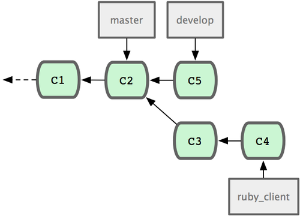
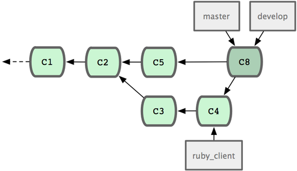

项目的管理¶
既然是相互协作，在贡献代码的同时，也免不了要维护管理自己的项目。像是怎么处理别人用 format-patch 生成的补丁，或是集成远端仓库上某个分支上的变化等等。但无论是管理代码仓库，还是帮忙审核收到的补丁，都需要同贡献者约定某种长期可持续的工作方式。
使用特性分支进行工作¶
如果想要集成新的代码进来，最好局限在特性分支上做。临时的特性分支可以让你随意尝试，进退自如。比如碰上无法正常工作的补丁，可以先搁在那边，直到有时间仔细核查修复为止。创建的分支可以用相关的主题关键字命名，比如 ruby_client 或者其它类似的描述性词语，以帮助将来回忆。Git 项目本身还时常把分支名称分置于不同命名空间下，比如 sc/ruby_client 就说明这是 sc 这个人贡献的。现在从当前主干分支为基础，新建临时分支:
$ git branch sc/ruby_client master
另外，如果你希望立即转到分支上去工作，可以用 checkout -b:
$ git checkout -b sc/ruby_client master
好了，现在已经准备妥当，可以试着将别人贡献的代码合并进来了。之后评估一下有没有问题，最后再决定是不是真的要并入主干。
采纳来自邮件的补丁¶
如果收到一个通过电邮发来的补丁，你应该先把它应用到特性分支上进行评估。有两种应用补丁的方法::git apply 或者 git am。
使用 apply 命令应用补丁¶
如果收到的补丁文件是用 git diff 或由其它 Unix 的 diff 命令生成，就该用 git apply 命令来应用补丁。假设补丁文件存在 /tmp/patch-ruby-client.patch，可以这样运行:
$ git apply /tmp/patch-ruby-client.patch
这会修改当前工作目录下的文件，效果基本与运行 patch -p1 打补丁一样，但它更为严格，且不会出现混乱。如果是 git diff 格式描述的补丁，此命令还会相应地添加，删除，重命名文件。当然，普通的 patch 命令是不会这么做的。另外请注意，git apply 是一个事务性操作的命令，也就是说，要么所有补丁都打上去，要么全部放弃。所以不会出现 patch 命令那样，一部分文件打上了补丁而另一部分却没有，这样一种不上不下的修订状态。所以总的来说，git apply 要比 patch 严谨许多。因为仅仅是更新当前的文件，所以此命令不会自动生成提交对象，你得手工缓存相应文件的更新状态并执行提交命令。
在实际打补丁之前，可以先用 git apply –check 查看补丁是否能够干净顺利地应用到当前分支中:
$ git apply --check 0001-seeing-if-this-helps-the-gem.patch
error: patch failed: ticgit.gemspec:1
error: ticgit.gemspec: patch does not apply
如果没有任何输出，表示我们可以顺利采纳该补丁。如果有问题，除了报告错误信息之外，该命令还会返回一个非零的状态，所以在 shell 脚本里可用于检测状态。
使用 am 命令应用补丁¶
如果贡献者也用 Git，且擅于制作 format-patch 补丁，那你的合并工作将会非常轻松。因为这些补丁中除了文件内容差异外，还包含了作者信息和提交消息。所以请鼓励贡献者用 format-patch 生成补丁。对于传统的 diff 命令生成的补丁，则只能用 git apply 处理。
对于 format-patch 制作的新式补丁，应当使用 git am 命令。从技术上来说，git am 能够读取 mbox 格式的文件。这是种简单的纯文本文件，可以包含多封电邮，格式上用 From 加空格以及随便什么辅助信息所组成的行作为分隔行，以区分每封邮件，就像这样:
From 330090432754092d704da8e76ca5c05c198e71a8 Mon Sep 17 00:00:00 2001
From: Jessica Smith <jessica@example.com>
Date: Sun, 6 Apr 2008 10:17:23 -0700
Subject: [PATCH 1/2] add limit to log function
Limit log functionality to the first 20
这是 format-patch 命令输出的开头几行，也是一个有效的 mbox 文件格式。如果有人用 git send-email 给你发了一个补丁，你可以将此邮件下载到本地，然后运行 git am 命令来应用这个补丁。如果你的邮件客户端能将多封电邮导出为 mbox 格式的文件，就可以用 git am 一次性应用所有导出的补丁。
如果贡献者将 format-patch 生成的补丁文件上传到类似 Request Ticket 一样的任务处理系统，那么可以先下载到本地，继而使用 git am 应用该补丁:
$ git am 0001-limit-log-function.patch
Applying: add limit to log function
你会看到它被干净地应用到本地分支，并自动创建了新的提交对象。作者信息取自邮件头 From 和 Date，提交消息则取自 Subject 以及正文中补丁之前的内容。来看具体实例，采纳之前展示的那个 mbox 电邮补丁后，最新的提交对象为:
$ git log --pretty=fuller -1
commit 6c5e70b984a60b3cecd395edd5b48a7575bf58e0
Author: Jessica Smith <jessica@example.com>
AuthorDate: Sun Apr 6 10:17:23 2008 -0700
Commit: Scott Chacon <schacon@gmail.com>
CommitDate: Thu Apr 9 09:19:06 2009 -0700
add limit to log function
Limit log functionality to the first 20
Commit 部分显示的是采纳补丁的人，以及采纳的时间。而 Author 部分则显示的是原作者，以及创建补丁的时间。
有时，我们也会遇到打不上补丁的情况。这多半是因为主干分支和补丁的基础分支相差太远，但也可能是因为某些依赖补丁还未应用。这种情况下，git am 会报错并询问该怎么做:
$ git am 0001-seeing-if-this-helps-the-gem.patch
Applying: seeing if this helps the gem
error: patch failed: ticgit.gemspec:1
error: ticgit.gemspec: patch does not apply
Patch failed at 0001.
When you have resolved this problem run "git am --resolved".
If you would prefer to skip this patch, instead run "git am --skip".
To restore the original branch and stop patching run "git am --abort".
Git 会在有冲突的文件里加入冲突解决标记，这同合并或衍合操作一样。解决的办法也一样，先编辑文件消除冲突，然后暂存文件，最后运行 git am –resolved 提交修正结果:
$ (fix the file)
$ git add ticgit.gemspec
$ git am --resolved
Applying: seeing if this helps the gem
如果想让 Git 更智能地处理冲突，可以用 -3 选项进行三方合并。如果当前分支未包含该补丁的基础代码或其祖先，那么三方合并就会失败，所以该选项默认为关闭状态。一般来说，如果该补丁是基于某个公开的提交制作而成的话，你总是可以通过同步来获取这个共同祖先，所以用三方合并选项可以解决很多麻烦:
$ git am -3 0001-seeing-if-this-helps-the-gem.patch
Applying: seeing if this helps the gem
error: patch failed: ticgit.gemspec:1
error: ticgit.gemspec: patch does not apply
Using index info to reconstruct a base tree...
Falling back to patching base and 3-way merge...
No changes -- Patch already applied.
像上面的例子，对于打过的补丁我又再打一遍，自然会产生冲突，但因为加上了 -3 选项，所以它很聪明地告诉我，无需更新，原有的补丁已经应用。
对于一次应用多个补丁时所用的 mbox 格式文件，可以用 am 命令的交互模式选项 -i，这样就会在打每个补丁前停住，询问该如何操作:
$ git am -3 -i mbox
Commit Body is:
--------------------------
seeing if this helps the gem
--------------------------
Apply? [y]es/[n]o/[e]dit/[v]iew patch/[a]ccept all
在多个补丁要打的情况下，这是个非常好的办法，一方面可以预览下补丁内容，同时也可以有选择性的接纳或跳过某些补丁。
打完所有补丁后，如果测试下来新特性可以正常工作，那就可以安心地将当前特性分支合并到长期分支中去了。
检出远程分支¶
如果贡献者有自己的 Git 仓库，并将修改推送到此仓库中，那么当你拿到仓库的访问地址和对应分支的名称后，就可以加为远程分支，然后在本地进行合并。
比如，Jessica 发来一封邮件，说在她代码库中的 ruby-client 分支上已经实现了某个非常棒的新功能，希望我们能帮忙测试一下。我们可以先把她的仓库加为远程仓库，然后抓取数据，完了再将她所说的分支检出到本地来测试:
$ git remote add jessica git://github.com/jessica/myproject.git
$ git fetch jessica
$ git checkout -b rubyclient jessica/ruby-client
若是不久她又发来邮件，说还有个很棒的功能实现在另一分支上，那我们只需重新抓取下最新数据，然后检出那个分支到本地就可以了，无需重复设置远程仓库。
这种做法便于同别人保持长期的合作关系。但前提是要求贡献者有自己的服务器，而我们也需要为每个人建一个远程分支。有些贡献者提交代码补丁并不是很频繁，所以通过邮件接收补丁效率会更高。同时我们自己也不会希望建上百来个分支，却只从每个分支取一两个补丁。但若是用脚本程序来管理，或直接使用代码仓库托管服务，就可以简化此过程。当然，选择何种方式取决于你和贡献者的喜好。
使用远程分支的另外一个好处是能够得到提交历史。不管代码合并是不是会有问题，至少我们知道该分支的历史分叉点，所以默认会从共同祖先开始自动进行三方合并，无需 -3 选项，也不用像打补丁那样祈祷存在共同的基准点。
如果只是临时合作，只需用 git pull 命令抓取远程仓库上的数据，合并到本地临时分支就可以了。一次性的抓取动作自然不会把该仓库地址加为远程仓库:
$ git pull git://github.com/onetimeguy/project.git
From git://github.com/onetimeguy/project
* branch HEAD -> FETCH_HEAD
Merge made by recursive.
决断代码取舍¶
现在特性分支上已合并好了贡献者的代码，是时候决断取舍了。本节将回顾一些之前学过的命令，以看清将要合并到主干的是哪些代码，从而理解它们到底做了些什么，是否真的要并入。
一般我们会先看下，特性分支上都有哪些新增的提交。比如在 contrib 特性分支上打了两个补丁，仅查看这两个补丁的提交信息，可以用 –not 选项指定要屏蔽的分支 master，这样就会剔除重复的提交历史:
$ git log contrib --not master
commit 5b6235bd297351589efc4d73316f0a68d484f118
Author: Scott Chacon <schacon@gmail.com>
Date: Fri Oct 24 09:53:59 2008 -0700
seeing if this helps the gem
commit 7482e0d16d04bea79d0dba8988cc78df655f16a0
Author: Scott Chacon <schacon@gmail.com>
Date: Mon Oct 22 19:38:36 2008 -0700
updated the gemspec to hopefully work better
还可以查看每次提交的具体修改。请牢记，在 git log 后加 -p 选项将展示每次提交的内容差异。
如果想看当前分支同其他分支合并时的完整内容差异，有个小窍门:
$ git diff master
虽然能得到差异内容，但请记住，结果有可能和我们的预期不同。一旦主干 master 在特性分支创建之后有所修改，那么通过 diff 命令来比较的，是最新主干上的提交快照。显然，这不是我们所要的。比方在 master 分支中某个文件里添了一行，然后运行上面的命令，简单的比较最新快照所得到的结论只能是，特性分支中删除了这一行。
这个很好理解::如果 master 是特性分支的直接祖先，不会产生任何问题；如果它们的提交历史在不同的分叉上，那么产生的内容差异，看起来就像是增加了特性分支上的新代码，同时删除了 master 分支上的新代码。
实际上我们真正想要看的，是新加入到特性分支的代码，也就是合并时会并入主干的代码。所以，准确地讲，我们应该比较特性分支和它同 master 分支的共同祖先之间的差异。
我们可以手工定位它们的共同祖先，然后与之比较:
$ git merge-base contrib master
36c7dba2c95e6bbb78dfa822519ecfec6e1ca649
$ git diff 36c7db
但这么做很麻烦，所以 Git 提供了便捷的 ... 语法。对于 diff 命令，可以把 ... 加在原始分支（拥有共同祖先）和当前分支之间:
$ git diff master...contrib
现在看到的，就是实际将要引入的新代码。这是一个非常有用的命令，应该牢记。
代码集成¶
一旦特性分支准备停当，接下来的问题就是如何集成到更靠近主线的分支中。此外还要考虑维护项目的总体步骤是什么。虽然有很多选择，不过我们这里只介绍其中一部分。
合并流程¶
一般最简单的情形，是在 master 分支中维护稳定代码，然后在特性分支上开发新功能，或是审核测试别人贡献的代码，接着将它并入主干，最后删除这个特性分支，如此反复。来看示例，假设当前代码库中有两个分支，分别为 ruby_client 和 php_client，如图 5-19 所示。然后先把 ruby_client 合并进主干，再合并 php_client，最后的提交历史如图 5-20 所示。

图 5-19. 多个特性分支

图 5-20. 合并特性分支之后
这是最简单的流程，所以在处理大一些的项目时可能会有问题。
对于大型项目，至少需要维护两个长期分支 master 和 develop。新代码（图 5-21 中的 ruby_client）将首先并入 develop 分支（图 5-22 中的 C8），经过一个阶段，确认 develop 中的代码已稳定到可发行时，再将 master 分支快进到稳定点（图 5-23 中的 C8）。而平时这两个分支都会被推送到公开的代码库。
图 5-21. 特性分支合并前

图 5-22. 特性分支合并后
图 5-23. 特性分支发布后
这样，在人们克隆仓库时就有两种选择::既可检出最新稳定版本，确保正常使用；也能检出开发版本，试用最前沿的新特性。你也可以扩展这个概念，先将所有新代码合并到临时特性分支，等到该分支稳定下来并通过测试后，再并入 develop 分支。然后，让时间检验一切，如果这些代码确实可以正常工作相当长一段时间，那就有理由相信它已经足够稳定，可以放心并入主干分支发布。
大项目的合并流程¶
Git 项目本身有四个长期分支::用于发布的 master 分支、用于合并基本稳定特性的 next 分支、用于合并仍需改进特性的 pu 分支（pu 是 proposed updates 的缩写），以及用于除错维护的 maint 分支（maint 取自 maintenance）。维护者可以按照之前介绍的方法，将贡献者的代码引入为不同的特性分支（如图 5-24 所示），然后测试评估，看哪些特性能稳定工作，哪些还需改进。稳定的特性可以并入 next 分支，然后再推送到公共仓库，以供其他人试用。

图 5-24. 管理复杂的并行贡献
仍需改进的特性可以先并入 pu 分支。直到它们完全稳定后再并入 master。同时一并检查下 next 分支，将足够稳定的特性也并入 master。所以一般来说，master 始终是在快进，next 偶尔做下衍合，而 pu 则是频繁衍合，如图 5-25 所示:

图 5-25. 将特性并入长期分支
并入 master 后的特性分支，已经无需保留分支索引，放心删除好了。Git 项目还有一个 maint 分支，它是以最近一次发行版为基础分化而来的，用于维护除错补丁。所以克隆 Git 项目仓库后会得到这四个分支，通过检出不同分支可以了解各自进展，或是试用前沿特性，或是贡献代码。而维护者则通过管理这些分支，逐步有序地并入第三方贡献。
衍合与挑拣（cherry-pick）的流程¶
一些维护者更喜欢衍合或者挑拣贡献者的代码，而不是简单的合并，因为这样能够保持线性的提交历史。如果你完成了一个特性的开发，并决定将它引入到主干代码中，你可以转到那个特性分支然后执行衍合命令，好在你的主干分支上（也可能是develop分支之类的）重新提交这些修改。如果这些代码工作得很好，你就可以快进master分支，得到一个线性的提交历史。
另一个引入代码的方法是挑拣。挑拣类似于针对某次特定提交的衍合。它首先提取某次提交的补丁，然后试着应用在当前分支上。如果某个特性分支上有多个commits，但你只想引入其中之一就可以使用这种方法。也可能仅仅是因为你喜欢用挑拣，讨厌衍合。假设你有一个类似图 5-26 的工程。

图 5-26. 挑拣（cherry-pick）之前的历史
如果你希望拉取e43a6到你的主干分支，可以这样:
$ git cherry-pick e43a6fd3e94888d76779ad79fb568ed180e5fcdf
Finished one cherry-pick.
[master]: created a0a41a9: "More friendly message when locking the index fails."
3 files changed, 17 insertions(+), 3 deletions(-)
这将会引入e43a6的代码，但是会得到不同的SHA-1值，因为应用日期不同。现在你的历史看起来像图 5-27.

图 5-27. 挑拣（cherry-pick）之后的历史
现在，你可以删除这个特性分支并丢弃你不想引入的那些commit。
给发行版签名¶
你可以删除上次发布的版本并重新打标签，也可以像第二章所说的那样建立一个新的标签。如果你决定以维护者的身份给发行版签名，应该这样做:
$ git tag -s v1.5 -m 'my signed 1.5 tag'
You need a passphrase to unlock the secret key for
user: "Scott Chacon <schacon@gmail.com>"
1024-bit DSA key, ID F721C45A, created 2009-02-09
完成签名之后，如何分发PGP公钥（public key）是个问题。（译者注::分发公钥是为了验证标签）。还好，Git的设计者想到了解决办法::可以把key（既公钥）作为blob变量写入Git库，然后把它的内容直接写在标签里。gpg –list-keys命令可以显示出你所拥有的key:
$ gpg --list-keys
/Users/schacon/.gnupg/pubring.gpg
---------------------------------
pub 1024D/F721C45A 2009-02-09 [expires: 2010-02-09]
uid Scott Chacon <schacon@gmail.com>
sub 2048g/45D02282 2009-02-09 [expires: 2010-02-09]
然后，导出key的内容并经由管道符传递给git hash-object，之后钥匙会以blob类型写入Git中，最后返回这个blob量的SHA-1值:
$ gpg -a --export F721C45A | git hash-object -w --stdin
659ef797d181633c87ec71ac3f9ba29fe5775b92
现在你的Git已经包含了这个key的内容了，可以通过不同的SHA-1值指定不同的key来创建标签:
$ git tag -a maintainer-pgp-pub 659ef797d181633c87ec71ac3f9ba29fe5775b92
在运行git push –tags命令之后，maintainer-pgp-pub标签就会公布给所有人。如果有人想要校验标签，他可以使用如下命令导入你的key:
$ git show maintainer-pgp-pub | gpg --import
人们可以用这个key校验你签名的所有标签。另外，你也可以在标签信息里写入一个操作向导，用户只需要运行git show <tag>查看标签信息，然后按照你的向导就能完成校验。
生成内部版本号¶
因为Git不会为每次提交自动附加类似’v123’的递增序列，所以如果你想要得到一个便于理解的提交号可以运行git describe命令。Git将会返回一个字符串，由三部分组成::最近一次标定的版本号，加上自那次标定之后的提交次数，再加上一段SHA-1值of the commit you’re describing:
$ git describe master
v1.6.2-rc1-20-g8c5b85c
这个字符串可以作为快照的名字，方便人们理解。如果你的Git是你自己下载源码然后编译安装的，你会发现git –version命令的输出和这个字符串差不多。如果在一个刚刚打完标签的提交上运行describe命令，只会得到这次标定的版本号，而没有后面两项信息。
git describe命令只适用于有标注的标签（通过-a或者-s选项创建的标签），所以发行版的标签都应该是带有标注的，以保证git describe能够正确的执行。你也可以把这个字符串作为checkout或者show命令的目标，因为他们最终都依赖于一个简短的SHA-1值，当然如果这个SHA-1值失效他们也跟着失效。最近Linux内核为了保证SHA-1值的唯一性，将位数由8位扩展到10位，这就导致扩展之前的git describe输出完全失效了。
准备发布¶
现在可以发布一个新的版本了。首先要将代码的压缩包归档，方便那些可怜的还没有使用Git的人们。可以使用git archive:
$ git archive master --prefix='project/' | gzip > `git describe master`.tar.gz
$ ls *.tar.gz
v1.6.2-rc1-20-g8c5b85c.tar.gz
这个压缩包解压出来的是一个文件夹，里面是你项目的最新代码快照。你也可以用类似的方法建立一个zip压缩包，在git archive加上–format=zip选项:
$ git archive master --prefix='project/' --format=zip > `git describe master`.zip
现在你有了一个tar.gz压缩包和一个zip压缩包，可以把他们上传到你网站上或者用e-mail发给别人。
制作简报¶
是时候通知邮件列表里的朋友们来检验你的成果了。使用git shortlog命令可以方便快捷的制作一份修改日志（changelog），告诉大家上次发布之后又增加了哪些特性和修复了哪些bug。实际上这个命令能够统计给定范围内的所有提交;假如你上一次发布的版本是v1.0.1，下面的命令将给出自从上次发布之后的所有提交的简介:
$ git shortlog --no-merges master --not v1.0.1
Chris Wanstrath (8):
Add support for annotated tags to Grit::Tag
Add packed-refs annotated tag support.
Add Grit::Commit#to_patch
Update version and History.txt
Remove stray `puts`
Make ls_tree ignore nils
Tom Preston-Werner (4):
fix dates in history
dynamic version method
Version bump to 1.0.2
Regenerated gemspec for version 1.0.2
这就是自从v1.0.1版本以来的所有提交的简介，内容按照作者分组，以便你能快速的发e-mail给他们。